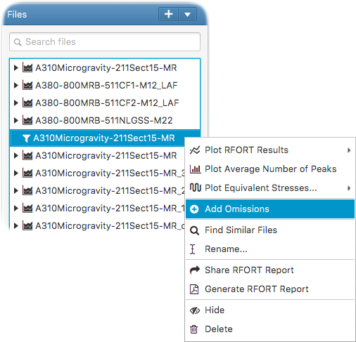

You can then define the additional omissions to be applied either by giving the direct omission values or the percentages on maximum stress amplitudes of each pilot point. The analysis will be run only for the newly defined omissions and the results will be appended to the already existing ones.